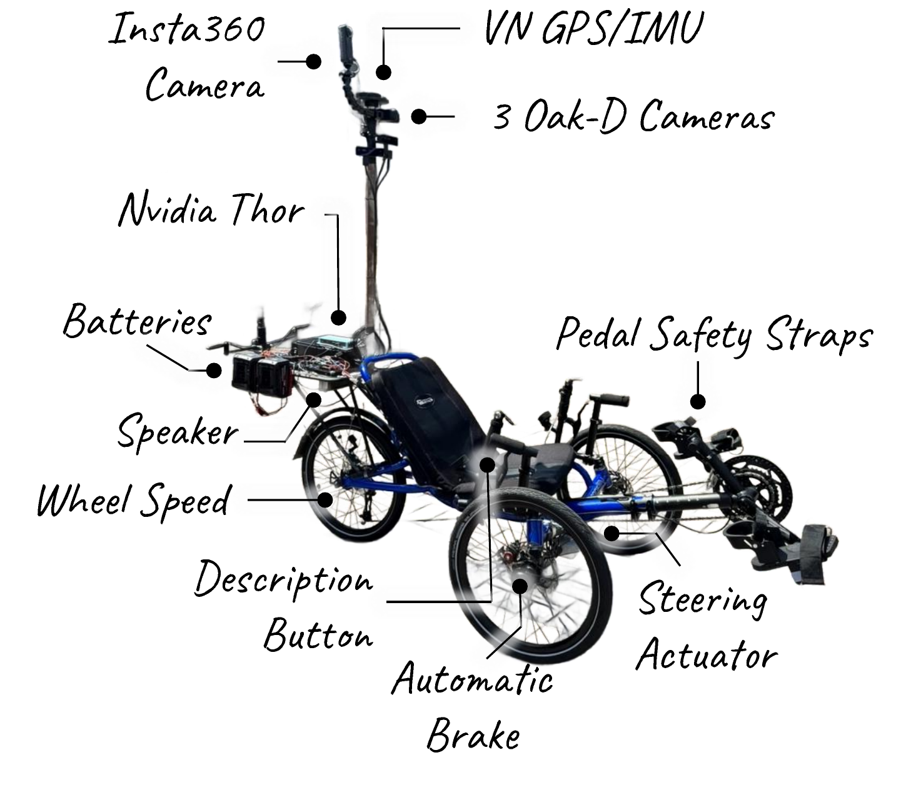
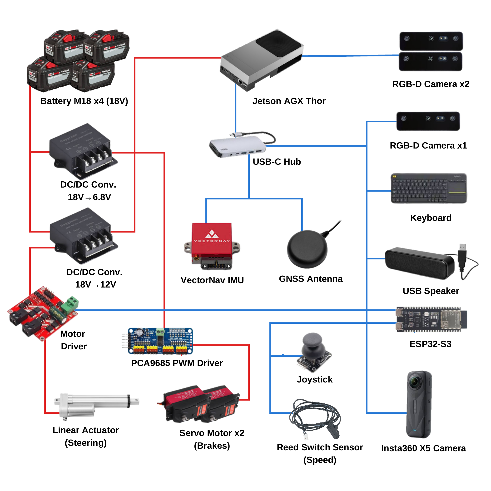
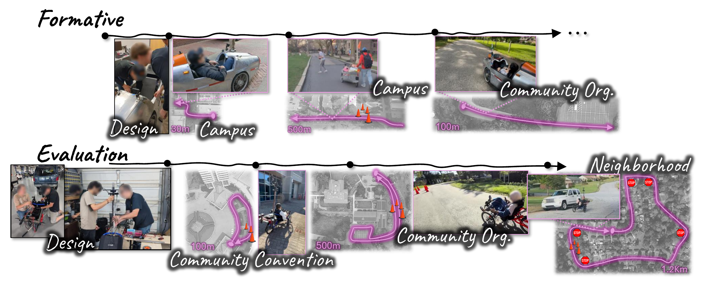

CyFI: Semiautonomous Cycling for Blind and Low-Vision Riders
CyFI is a semi-autonomous, human-powered recumbent tricycle designed to support blind and low-vision riders through onboard sensing, autonomous steering, safety braking, multimodal feedback, and environmental awareness.

Overview
Cycling provides transportation, exercise, recreation, and independent exploration, but visually demanding tasks such as steering and obstacle avoidance can limit access for blind and low-vision riders. CyFI investigates how shared autonomy can support these tasks while preserving rider propulsion, agency, and active participation in the control loop.
Shared Autonomy
The rider provides propulsion and retains manual braking while CyFI can autonomously steer and initiate safety braking.
Multimodal Feedback
Audio and vibrotactile feedback communicate upcoming autonomous actions, while riders can request spoken descriptions of their surroundings.
Real-World Evaluation
CyFI was developed through longitudinal co-design and iterative evaluations with blind and low-vision riders across increasingly realistic cycling environments.
System
CyFI integrates sensing, onboard computation, actuated steering and braking, rider input, and multimodal feedback into a semi-autonomous recumbent cycle. The diagram below summarizes the hardware architecture and the major sensing, computing, actuation, and rider-interface components.

Study
CyFI emerged through a longitudinal and iterative co-design process, progressing from formative design activities to evaluations in increasingly realistic riding environments. The timeline below summarizes this progression across design, campus, community, and neighborhood riding scenarios.

Participant quote placeholder.
Selected anonymized participant feedback will be added here.
Evaluation
Quantitative and qualitative evaluation examines rider interaction, system behavior, participant experience, and real-world operation. Final plots and quantitative results will be synchronized with the submission-ready manuscript.
Additional Analysis & Ablations
This section provides supplementary analyses, implementation details, and ablations that complement the main paper.
- Additional quantitative results and ablations
- System behavior under different operating conditions
- Supplementary implementation and design details
- Additional participant-level analysis
Videos
Representative study clips will illustrate CyFI operating across diverse riders, environments, roadway conditions, and autonomy interactions.
Paper
The anonymous manuscript will be linked here once the submission-ready version is finalized.
Under Review